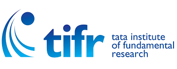

News
[Nov 2023] Recipient of the Google India Research Award 2023 (Together with Prof. Rahul Vaze) for our joint proposal "Online Convex Optimization with Online Constraints".
[Sep 2023] Our paper No-regret Algorithms for Fair Resource Allocation , co-authored with Ativ Joshi, Rajarshi Bhattacharjee, Cameron Musco, and Mohammad hajiesmaili, has been accepted to NeurIPS 2023.
[Feb 2023] Our paper Fast and Secure Routing Algorithms for Quantum Key Distribution Networks, co-authored with Shahbaz Akhtar, Krishnakumar G, and Vishnu B, has been accepted to IEEE/ACM Transactions on Networking.
[Oct 2022] Our paper Optimistic No-regret Algorithms for Discrete Caching, co-authored with Naram Mhaisen, Georgios Paschos, and George Iosifidis, has been accepted to SIGMETRICS 2023.
[August 2022] Our paper Universal Caching, co-authored with Ativ Joshi , has been accepted to ITW 2022.
[July 2022] Our joint US-India collaborative project proposal with U Mass Amherst has been approved with ISI Kolkata as the coordinating TIH.
[June 2022] Our poster on optimal routing in QKD networks has received the best poster award in JTG 2022.
[June 2022] Our paper on Optimizing Age-of-Information in Adversarial and Stochastic environments has been accepted to IEEE Transactions on Information Theory.
[May 2022] Delivered an invited talk at NCC 2022 [slides].
[Apr 2022] Moved to the School of Technology and Computer Science (STCS) at the Tata Institute of Fundamental Research as a Reader.
[Jan 2022] Our paper on k-experts has been accepted to AISTATS 2022.
[Nov 2021] Our Quantum Key Distribution paper got accepted to COMSNETS 2022. Another paper on Age-of-Information also got accepted to COMSNETS 2022.
[Nov 2021] Gave an invited talk at UMass/CQN Quantum Network Science Seminar on our Quantum Key Distribution paper. [Slides]
[Oct 2021] Have been awarded the INSA Medal for Young Scientists (2021), considered to be the highest recognition of promise, creativity, and excellence in a young scientist, as evidenced by their research work carried out in India.
[Sep 2021] Our paper on online network caching has been accepted to NeurIPS 21.
[June 2021] Samrat Mukhopadhyay joins IIT Dhanbad as an Assistant Professor. Congratulations, Samrat!
[May 2021] Our paper on optimal caching with minimal switching has been accepted to ISIT 2021.
[March 2021] Our paper on optimal control of distributed service chaining has been accepted to IEEE/ACM Transactions on Networking.
[March 2021] Gave a talk on Network Caching using Onine Learning at the Workshop on Stochastic Models organized by IIT Bombay.
[March 2021] Samrat Mukhopadhyay joined our group as an Institute Post-Doc Fellow. He will be working on Online Learning problems. Welcome Samrat!
[Jan 2021] Starting as the founder and PI of the proposed Center of Excellence (CoE) "Intelligent Networks" approved under the nationwide IoE scheme.
[Oct 2020] Gave an invited talk in the Theory Matters online seminar series on our recent work on Network Caching using Online Learning. [slides]
[June 2020] Our short paper on designing competitive algorithms for minimizing the Age-of-Information has been accepted to the prestigious workshop MAthematical performance Modeling and Analysis (MAMA) 2020, cohosted with SIGMETRICS 2020, Boston, MA.
[May 2020] Serving as a TPC member of COMSNETS 2021, to be held at Bangalore. Consider submitting your papers to COMSNETS 2021!
[March 2020] Our network caching paper has been accepted to SIGMETRICS 2020, the flagship conference of the ACM Performance group.
[March 2020] Our paper on Age of Information has been accepted to ISIT 2020.
[Nov 2019] Serving as a TPC member of WiOpt 2020, to be held at Volos, Greece. Consider submitting your papers to WiOpt 2020!
[Oct 2019] Serving as a TPC member of SPCOM 2020, to be held at IISc Bangalore. Consider submitting your papers to SPCOM 2020!
[Sep 2019] Paper accepted to IEEE Transactions on Mobile Computing.
[July 2019] Received an unrestricted gift from Qualcomm, USA.
[July 2019] Gave an invited talk at ISI Kolkata.
[June 2019] Gave an invited talk at the Joint Telematics Group (JTG) 2019 Summer School, held at IIT Madras.
[June 2019] Chaired a session on Age of Information at WiOpt 2019, held at Avignon, France.
[May 2019] Gave an invited talk at the Huawei Mathematical and Algorithmic Sciences Lab, Paris.
Our paper wins the Best Paper Award in IEEE INFOCOM 2018, Honolulu, HI.
MIT News Article on our Age of Information research.
Media Coverage 1 and Media Coverage 2 on our recent work.
Our paper wins the Best Paper Award in ACM Mobihoc 2016, Paderborn, Germany. MIT link, Yale link .
